图文实录 · 小红书 · 徐贰懂
raw和jpg的区别在哪里？聊聊原理
差别不在口号里的「RAW 画质好、JPG 画质差」，而在两件事：量化时用多少级去量光，以及这些级是在机内被做成 8bit 成品，还是把 ADC 之后的测量留到后期再做。笔记把多数 RAW 写成 14bit、16384 个亮度等级，把 JPG 写成已经烤完白平衡、曲线和色彩、再以 8bit 存盘的结果。
1/13
快门之后，数字以哪种格式留下
封面大字是「raw和jpg的区别 / 到底在哪里？」，旁边印着全文 3400 字、阅读需 11 分钟。前几篇聊过曝光、直方图、色温、景深、MTF 曲线。这一篇从光路接上：光进来，镜头把光汇聚到 CMOS 上，CMOS 把光子转化成电子信号，ADC（模数转换器）把电压变成数字。然后问这些数字以什么格式保存。按下快门，相机给两个选择：JPG 或 RAW。封面没有印比特数，也没有菜单名。
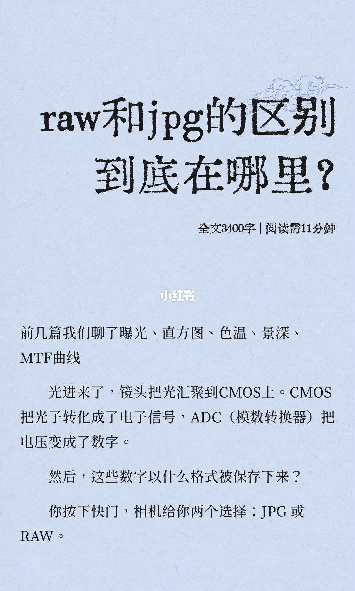
2/13
位数决定亮度能分成多少级
开头先写下常识：RAW 画质好，JPG 画质差，拍 RAW 后期空间大。然后问为什么。这篇要聊量化深度、信息冗余，以及「后期拉得动」和「拉不动」之间那堵看不见的墙。第一节标题是「量化深度的原理就像你用多长的尺子去量光」。CMOS 把光子数转化成电压值，ADC 把电压值转化成一个数字。这个数字的位数，也就是用多少比特（bit）来表示，决定能把光的亮度分成多少个等级。页上印出的四行是：8bit = 2⁸ = 256 个等级；10bit = 2¹⁰ = 1024 个等级；14bit（大多数 RAW）= 2¹⁴ = 16384 个等级；16bit（高端后背/后期格式）= 2¹⁶ = 65536 个等级。
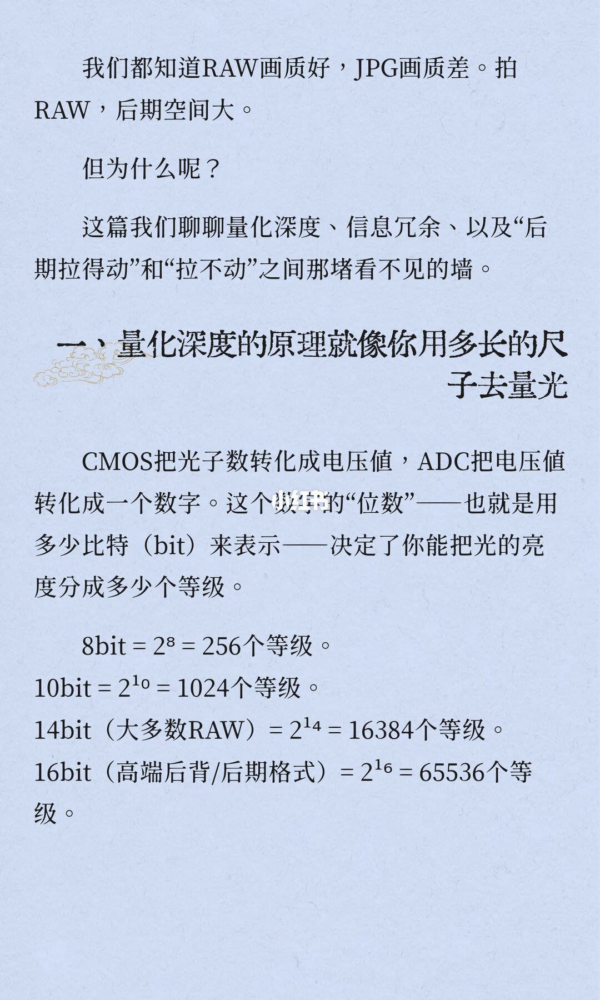
3/13
色数格子和亮度尺子不是同一把尺
上半是同一场景的九格，从左到右、从上到下，图注依次是：1 位，2 色，4K；2 位，4 种颜色，8K；3 位，8 个色彩调色板，12k；4 位，16 色，16k；5 位，32 种颜色，20k；6 位，64 色，28k；7 位，128 种颜色，33k；8 位，256 色，42k；24 位，16,777,216 色，147k。下半改用尺子比喻。8bit：一把长 1 米、只有 256 格的尺子量身高，身高只能落在 256 个刻度之一；两人相差小于 1/256 米（约 4mm），就被记录为一样高。14bit（RAW）：同样 1 米，但有 16384 格，精度是前者的 64 倍；身高差不到 0.06mm，这把尺子依然能区分。页末一句没写完：「下列图片描述不同像素位深所呈现出的画面效」。这句指向后面的渐变条。九格印在这句话上面，比的是颜色种数和体积，不是第 2 页那种亮度等级。图上的「8 位，256 色」不能换成第 2 页的「8bit = 256 个等级」；图上的 24 位、16,777,216 色，正文也没有把它写成 RAW。
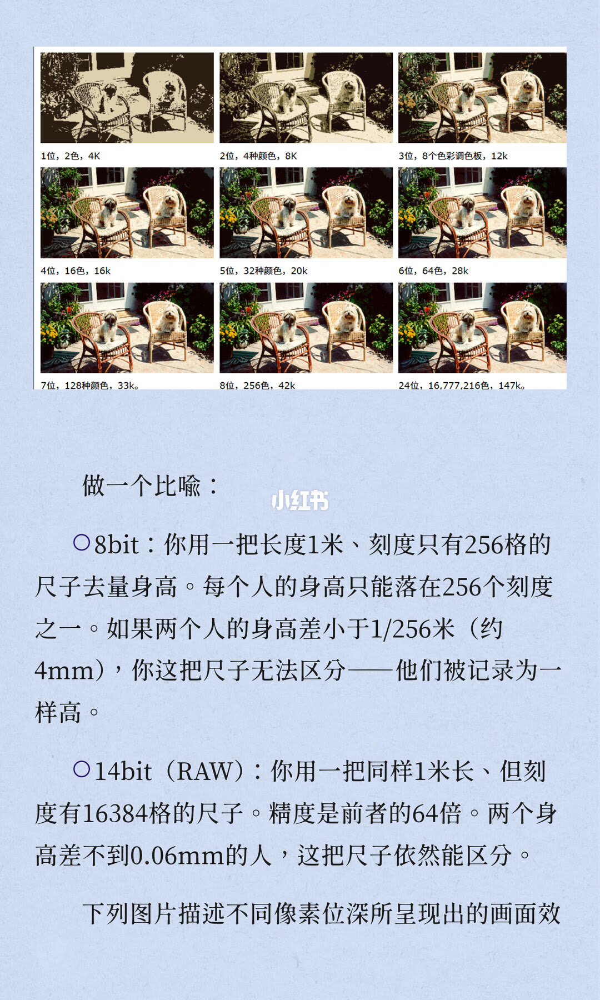
4/13
24bpp 和 16bpp 要靠显示器才看得出
上页接成「效果」：虽然 24bpp 和 16bpp 看起来没什么不同，但是如果显示设备有 24bpp 或者更高的 32bpp，就能看出差别。页上两条完整色条分别标着 24bpp 和 16bpp，都是横向彩虹渐变。12bpp 的标签印在页底，这一页没有把对应色条完整展开。
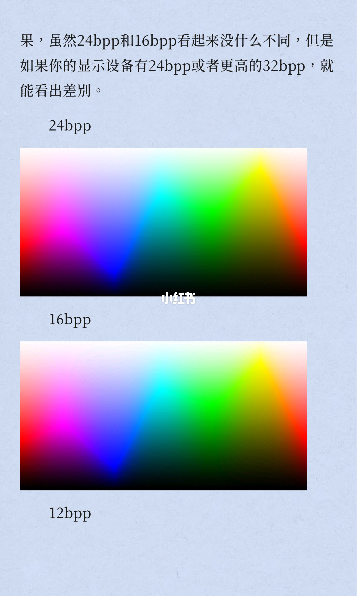
5/13
渐变条落到 10bpp 和 8bpp
这一页继续色条。能读出的标签是 10bpp 和 8bpp。10bpp 那条过渡更连续，8bpp 能看出颗粒或台阶。页下还有一条台阶更硬的色带，旁边没有再印位数，这里不补标签。
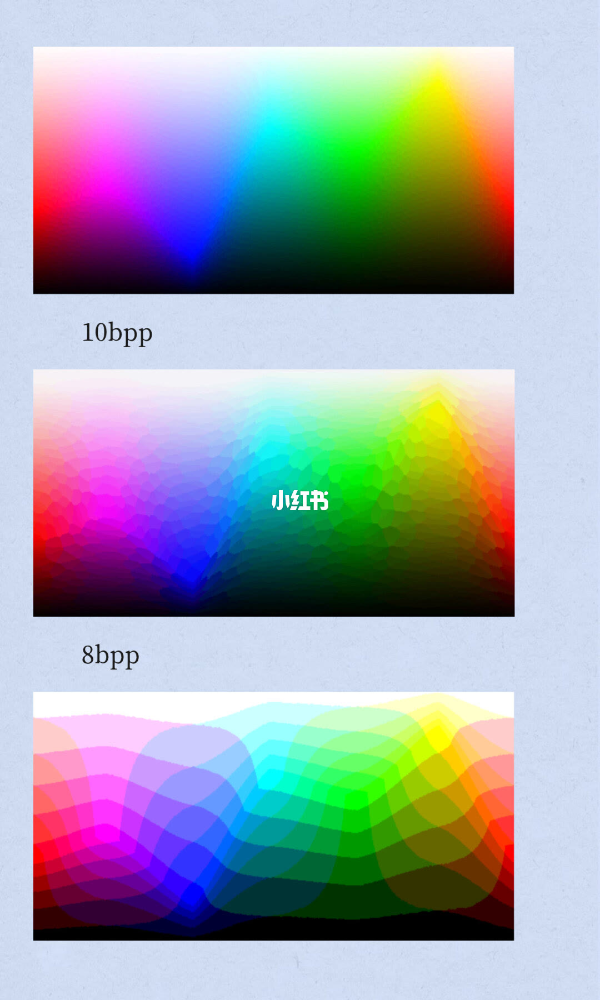
6/13
步长变小，后期才不容易拉断
所以可以这么理解：bit 数越高，相邻亮度等级之间的步长越小，CMOS 记录到的微小亮度差异被保留得越完整。这决定后期调整时会不会「拉断」。第二节标题是「为什么 8bit 的照片容易有断层」。任何量化都有不可避免的物理损失：量化误差（Quantization Error）。真实世界的亮度是连续的，相邻亮度之间有无限多个中间值；把它变成离散数字（8bit = 256 个值），每个像素都要做一次四舍五入。丢掉的信息就是量化误差。在 8bit 下，256 个等级意味着相邻两级的亮度差约为 0.4%。看起来很小，但后期把某个区域的亮度「拉」一下，比如把天空压暗、把阴影提亮，实际就是在把，句子在页底断开。
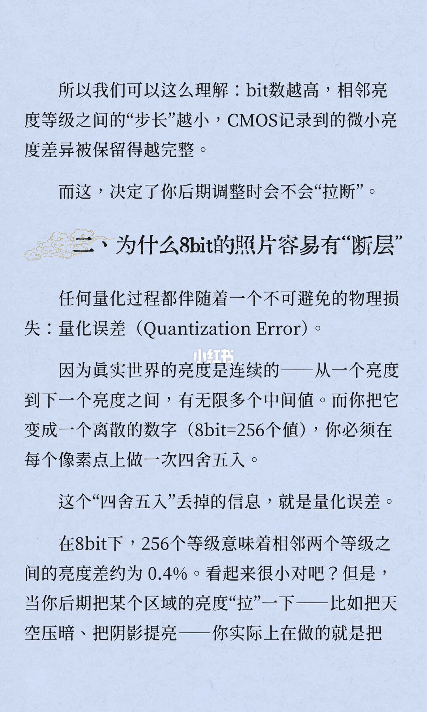
7/13
正文比 14bit，图上比的是 10 Bit 和 8 Bit
上页接上：把原本被四舍五入丢掉的差值，强行放大到肉眼可见。这时看到色彩断层（Banding）。天空不是平滑渐变，而是一条一条的色带，像等高线地图。用于描述过渡的中间值不存在了，放大的是四舍五入后的残差。中间两张日落海面并排，图注是左边 10 Bit、右边 8 Bit：左边天空过渡更顺，右边色带更明显，下面各有一条色谱。以这张图为准，示意的是 10 Bit 对 8 Bit。正文接着写的却是另一组：8bit 的 JPG，后期调整幅度一旦超过 ±1EV，断层几乎必然出现。14bit 的 RAW：16384 个等级，相邻等级亮度差约为 0.006%。即使后期拉 3 档、4 档曝光，被丢掉的差值仍然小到肉眼难以分辨。断层很难出现，一般在破坏画质之前都不，句子再次断开。图没有标 14bit，也没有标 ±1EV。
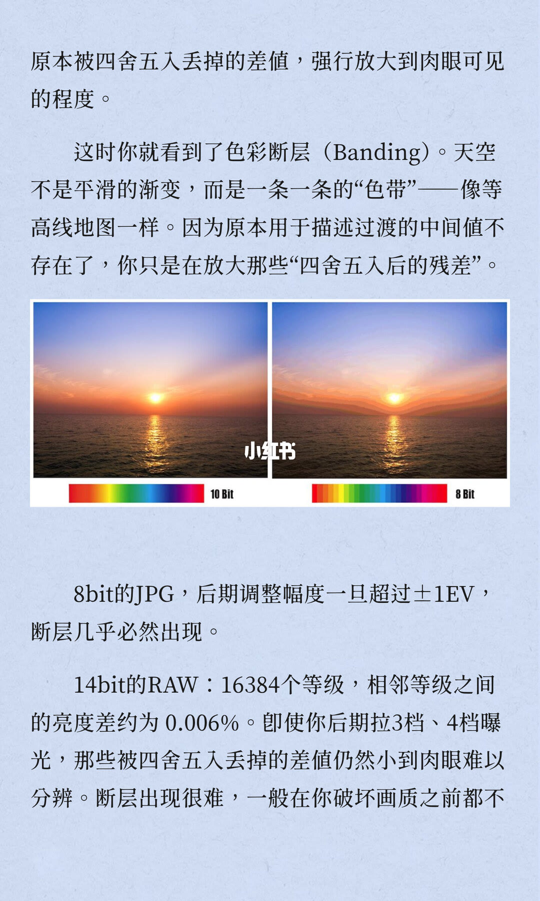
8/13
差别被写成时间点，不是压缩这句话
上页接成「会出现」。第三节标题是「RAW vs JPG 的本质区别不是压缩，是时间点」。很多言论认为 JPG 是有损压缩，RAW 是无损压缩。这句话形式上正确，本质上则很错误。真正区别在于：raw 拍出来是一团数据（元数据）；JPG 是经过机内完整处理流程后的最终输出，是一个已完成的状态。拍 JPG 时，相机在机内做一系列非线性操作，这一页列到第三步：① 白平衡增益（RGB 通道分别乘系数）；② 色彩空间映射（把 RAW 的原始色彩翻译成 sRGB 或 Adobe RGB）；③ 色调曲线映射（把 14bit 的数据「压缩」成 8bit，同时应用厂商预设的对比度和饱和度曲线）。这里的「元数据」是页上的原词。下一页把同一份 RAW 写成原始测量数据，两页用词不一致。
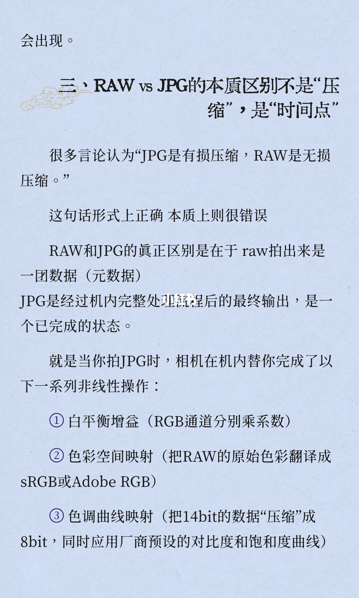
9/13
步骤 3 不可逆，RAW 把 14bit 测量留下
清单接上：④ 锐化和降噪；⑤ 把这些操作后的结果，以 8bit 的精度保存为 JPG。整个流程中，步骤 3 是物理上不可逆的。拿到的是一个已经做好所有决定的 8bit 文件：白平衡已经烤进去，对比度已经压进去，色彩已经翻译完。要改，只能在大幅损失了原始信息的文件上修修补补。RAW 这边，相机只做一件事：把 ADC 量化后的 14bit 原始数据，稍微做一下无损压缩（比如索尼的 ARW、佳能的 CR3），然后原封不动存下来。白平衡没做。色调曲线没做。降噪没做。色彩空间没做，更没有 8bit 压缩。RAW 文件里保存的是原始测量数据。在 Lightroom 里拖动色温滑块、拉曝光、调对比度，就是自己完成机内本该做的那些步，句子在「步」字断开。
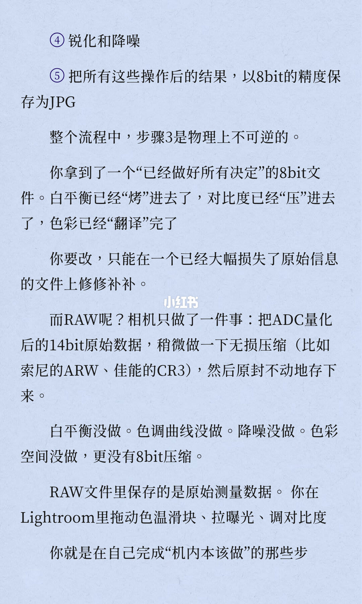
10/13
肤色正文写 14bit，配图注的是 10bit 对 8bit
上页接成「骤」：而且你拥有 14bit 的精度去完成它们。第四节标题是「色彩深度对人像摄影的影响」，集中体现在三个场景。场景一是肤色渐变过渡。人脸不是一块均匀的颜色。颧骨的高光到脸颊的阴影之间，有一系列微妙的肤色过渡。8bit 的 256 个等级在表达这种过渡时级数不足，特别是后期压暗高光或提亮阴影时，过渡区会出现明显的色阶断裂，肤色看起来像涂上去的，不像长出来的。配图是一块皮肤的左右对比，图注印的是「左为 10bit 右为 8bit」。以图为准：这块对比是 10bit 和 8bit，不是正文里的 14bit。图下才写 14bit RAW 保留了 16384 个等级的原始数据，足以在后期大幅调整后依然保持平滑的肤色过渡。
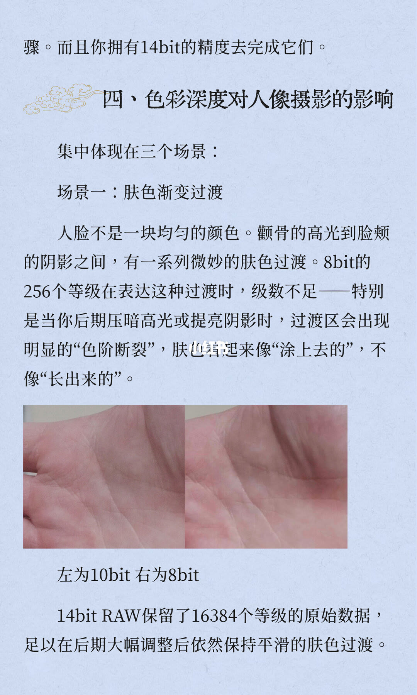
11/13
日落色带，以及向右曝光拉回来
场景二是环境光的色彩氛围。日落的天空从亮黄过渡到深紫，中间有数以万计的颜色变化。8bit JPG 一拉饱和度或对比度，天空会出现色带。14bit RAW 可以承受饱和度的大幅拉伸，色彩过渡依然顺滑。场景三是大幅度的曝光修正，括号里写「向右曝光的后处理」。前文提到的向右曝光策略，会让后期把亮度拉回来。用 JPG，拉回来会同时放大 8bit 量化误差，暗部噪点加断层一起出现。用 RAW，在 14bit 的精度下做亮度调整，量化误差被放大的幅度极小，最终输出到 8bit 时，断层被推迟到肉眼不可见的程度。第五节标题是「对于人像摄影师是用 jpg 还是 raw 的决策」。基于以上物理分析，实际拍摄中的决策应该是，然后问：什么时候必须拍 RAW？标题写的是人像摄影师，场景二和场景三写的是日落和向右曝光，不限于人像。
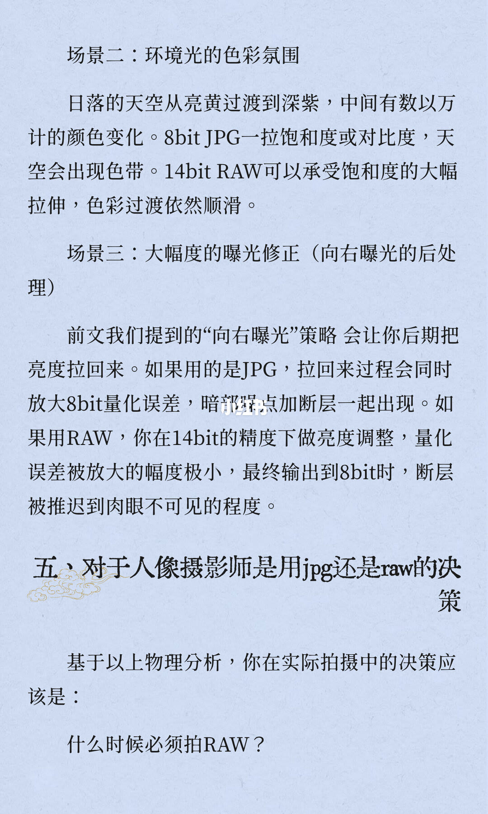
12/13
必须拍 RAW 的三种，JPG 够用的两种
必须拍 RAW 的三条：任何涉及高光比环境（逆光、户外强光加阴影）的场景；任何不确定最终色彩风格、需要后期精细调整色调的场景；任何商业交付级别的拍摄（客户会放大看、会要求修改色调）。什么时候 JPG 就够用：光线均匀、曝光确定、完全确定不需要大幅度后期调整的场景；相机直出色彩非常满意、希望快速交付的场景（比如活动现场快照）。但要明白：JPG 永远无法变成 RAW。一张 8bit 文件里不存在的中间值，没有任何后期软件能创造出来。所谓后期拉回细节，本质上是用算法去猜原本不存在的值。猜得准不准，取决于内容；猜出来的东西，不是真实的原始数据。页末只有「写在最后」四个字。
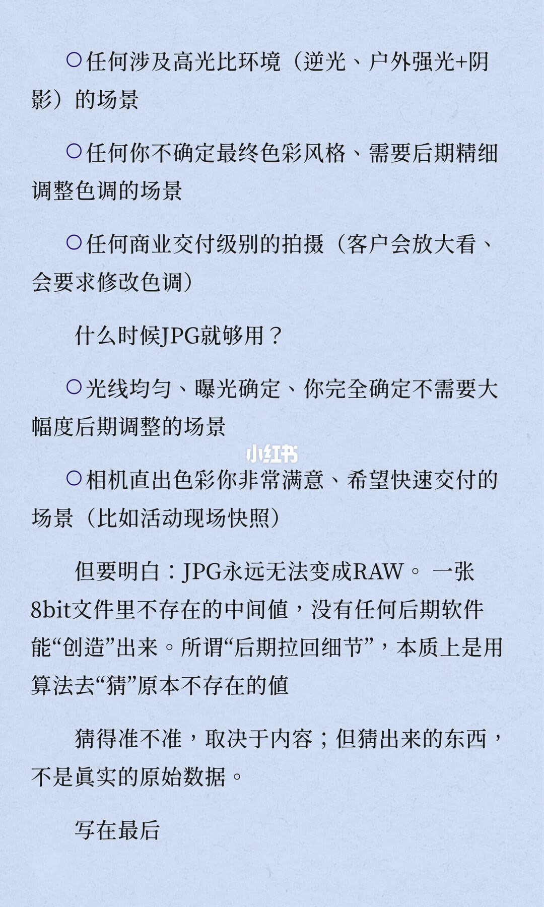
13/13
留的是选择权，不是业余和专业的标签
写在最后：8bit 和 14bit 不是存储空间的问题，是手里那把尺子有多精细的问题。拍 JPG，等于相机替你拿了一把 256 格的粗尺子量完所有东西，量完就丢了。拍 RAW，等于自己拿一把 16384 格的细尺子量了一遍，数据带回家，想怎么量就怎么量。这不是说拍 raw 就是专业，拍 jpg 就是业余，这是保留还是放弃选择权的区别。
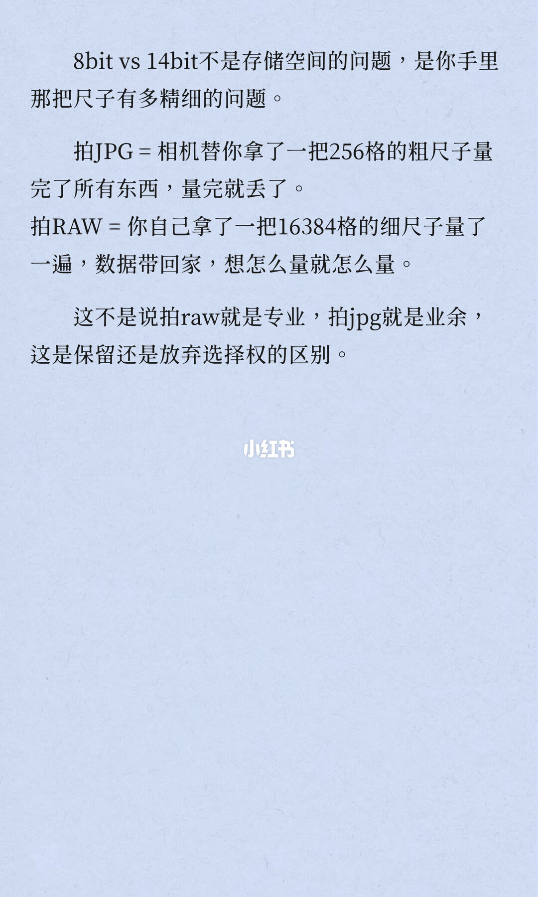
收尾
先留住刻度，再决定要不要烤进 JPG
结论：JPG 是机内已经做过白平衡、色彩空间、色调曲线、锐化和降噪、再以 8bit 存下来的成品；笔记把步骤 3 的 14bit 压到 8bit 写成物理上不可逆。多数 RAW 被写成 ADC 之后的 14bit 测量，只做一点无损压缩就留下，后期是自己做那些机内步骤。8bit 相邻亮度约差 0.4%，调整一旦超过 ±1EV，断层几乎必然出现；14bit 相邻约差 0.006%，拉 3 档、4 档仍把残差留在肉眼难辨的范围。高光比、色彩风格还没定、商业交付，笔记要求拍 RAW。光线均匀且确定不大改、或者满意直出并要快交，JPG 够用。8bit 里没有的中间值，后期只能猜，猜出来的不是原始数据。
支撑页：第 2 页给出 8/10/14/16 bit 的等级。第 6–7 页解释量化误差、0.4%、±1EV、0.006% 和 3 到 4 档。第 8–9 页把区别放在时间点，并列出 JPG 五步和 RAW 没做的那些事。第 10–11 页是肤色、日落和向右曝光拉回。第 12 页是必须 RAW 和 JPG 够用的清单。第 13 页把 256 格对 16384 格收成选择权。
边界：图和文字有三处不能混用。第 3 页九格是颜色种数和体积（1 位 2 色直到 24 位 16,777,216 色），尺子比喻才是亮度等级；「下列图片」接到第 4–5 页的 bpp 色条。第 7 页图注是左 10 Bit、右 8 Bit，±1EV 和 14bit 只在文字里。第 10 页图注是左 10bit、右 8bit，16384 级写在图下。第 5 页页下还有一条更硬的色带，没有印位数。第 8 页称 RAW 为「一团数据（元数据）」，第 9 页称「原始测量数据」。第 2 页预告了「信息冗余」，后文没有这个小标题。没有菜单路径。向右曝光没有档数。无损压缩的例子只有索尼 ARW、佳能 CR3。16bit 只标了高端后背/后期格式。封面的 3400 字、11 分钟是页面自述。